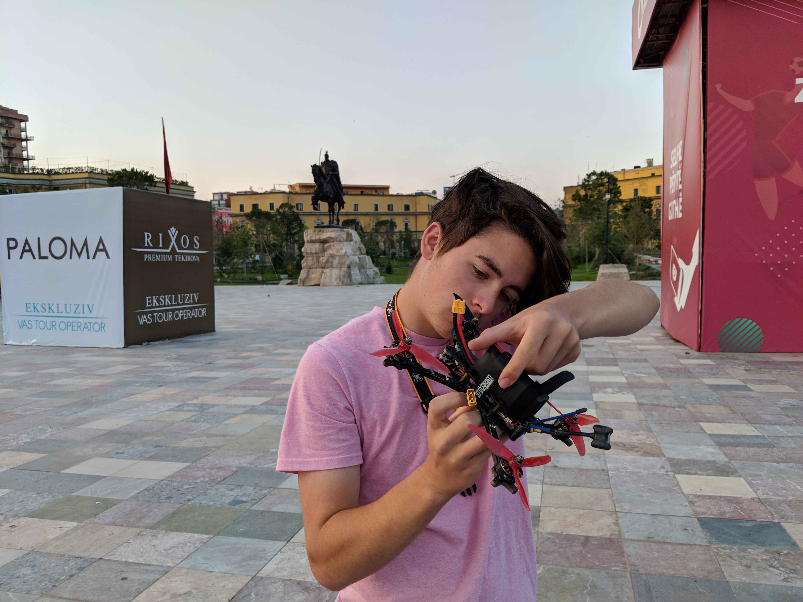
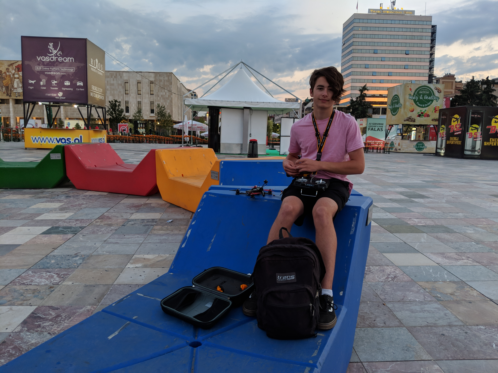

My main hobby is building and flying FPV (First Person View) racing quadcopters. I spend most of my excess time and money building, repairing, flying and learning about these extremely athletic quadcopters. These quadcopters can fly faster than 100km/h and are extremely stable and controllable in the air. This complete control is achieved by the four independent motors working together to control all 3 axis with precision, and by sending a live video feed back to my FPV goggles on the ground I am able to see from the perspective of the quad. Miniquads are exhilarating to watch and fly but can only fly for around 2-5 minutes per battery. MultiGP is the most common racing league for FPV quadcopter hobbyists.
Above are a couple of videos I've recorded, and below are videos from two pro pilots. All of these videos were filmed with racing quadcopters.
Below are two photos of me during an early morning flying session in Tirana, Albania.
- 
- 